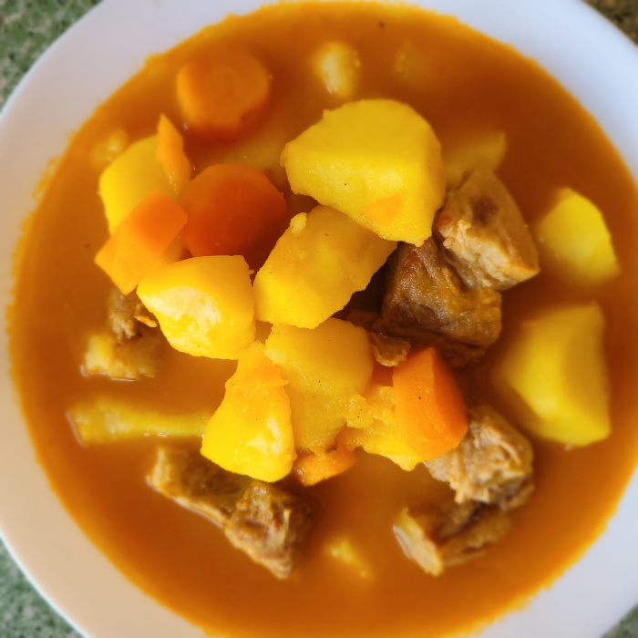

Cazuela de patatas (con costilla)
Descripción
Esta cazuela de patatas con costilla de cerdo es un plato completo y reconfortante, ideal para disfrutar en familia.
Aporta proteínas de alta calidad gracias a la carne, carbohidratos complejos de las patatas y un buen equilibrio de vitaminas y minerales procedentes de las verduras como la zanahoria, el tomate y el pimiento.
Rica en vitamina A, C, B6, hierro y potasio, es una receta sabrosa que también ayuda a mantener la energía y el sistema inmunológico en forma.
Ingredientes
- Costilla (½ kilo aprox.)
- 1 tomate
- 1 pimiento
- 1 cebolla
- 1 ó 2 dientes de ajo
- Patatas (1 kilo aprox.)
- Zanahorias 2 ó 3
- Laurel
- Pimiento molido (para el sofrito), una cucharadita
- Azafrán
- Pimienta molida
- Sal
- Aceite (muy poco)
- Vino 200 ml
- agua (1,8 l. aprox.)
Pasos
- Se morea la carne en la olla, y se reserva en otro recipiente.
- En la misma olla ponemos un poco de aceite y se hace el sofrito (tomate, pimiento, cebolla,
ajo), se deja unos 10 minutos a fuego medio. Después, un poco antes de apartarlo y a fuego
más bajo, se le añade el pimiento molido (sobre 1 minuto).
Si tiene mucho aceite, se le quita un poco ya que la costilla contiene mucha grasa
Se tritura el sofrito por la batidora. - Continuamos poniendo en la olla la carne y el sofrito ya triturado, se añade el laurel y las zanahorias cortadas en trozos, después agregamos el vino y se deja que hierva unos segundos.
- Seguidamente se le añade el agua y dejamos el tiempo necesario para que la costilla se cocine, dependiendo si se usa olla express o convencional:
- En la olla express lo dejamos hirviendo unos 25 minutos.
- En la olla convencional lo dejamos el tiempo necesario hasta que la costilla esté tierna.
- Por último añadimos las patatas cortadas en trozos (chascadas), la pimienta molida y el azafrán, lo dejamos hirviendo a fuego medio hasta que las patatas estén tiernas (una media hora según sean las patatas).